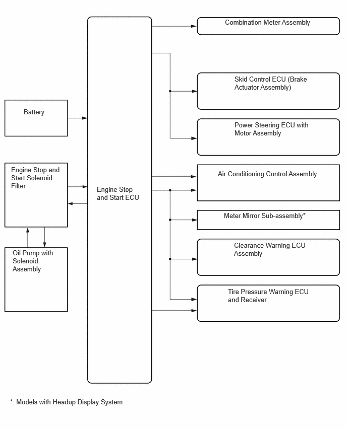
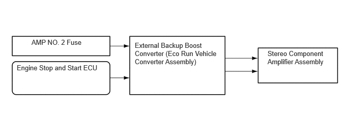

| Last Modified: 10-07-2025 | 6.11:8.1.0 | Doc ID: NM100000002GYDX |
| Model Year Start: 2024 | Model: Tacoma | Prod Date Range: [12/2023 - ] |
| Title: IDLING STOP CONTROL: STOP AND START: ECO RUN VEHICLE CONVERTER; 2024 - 2026 MY Tacoma Tacoma HV [12/2023 - ] | ||
ECO RUN VEHICLE CONVERTER
CONSTRUCTION
(a) The backup boost converter uses a semiconductor relay. The semiconductor relay also functions as a fuse. When overcurrent is detected, the relay is turned off to protect the circuit.
(b) The backup boost converter supplies battery voltage to help make up for the voltage drop that occurs when the engine is restarted. This prevents the operation of the following equipment from being interrupted due to low battery voltage.
- Combination Meter Assembly
- Skid Control ECU (Brake Actuator Assembly)
- Power Steering ECU with Motor Assembly
- Meter Mirror Sub-assembly*
- Clearance Warning ECU Assembly
- Tire Pressure Warning ECU and Receiver
- Oil Pump with Solenoid Assembly
- Air Conditioning Control Assembly
*: Models with headup display system
(c) An external backup boost converter (eco run vehicle converter assembly) is used.
(d) When the audio system is used during idle stop, the external backup boost converter (eco run vehicle converter assembly) compensates for the voltage drop to supplement audio playback by stabilizing the sound quality.
